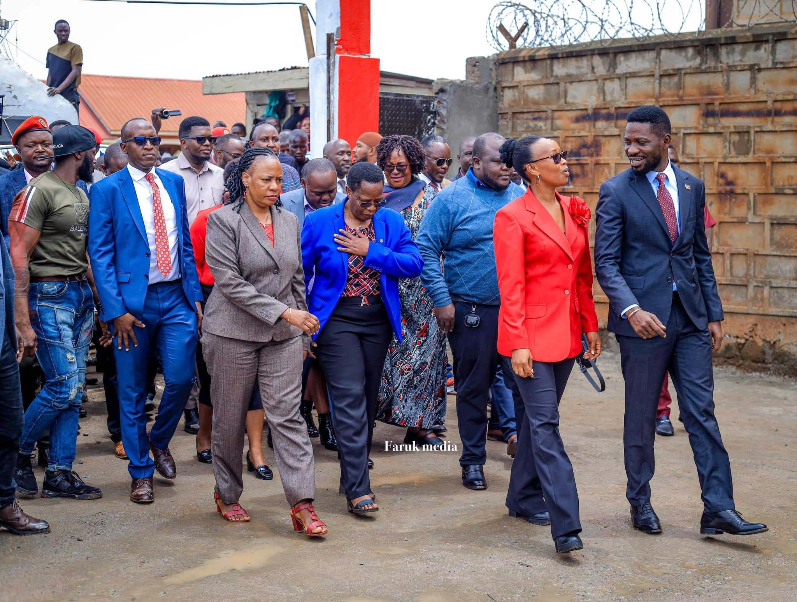
Trusted journalism. Local stories. Global reach.
Breaking news, longform features and live shows — all in one place.
Why Us
Trusted Reporting
We bring local and regional news with accuracy, context and editorial independence.
Live Coverage
Watch live shows, events and breaking stories on desktop or mobile.
Community Focus
Pace Media highlights community voices, stories and social impact from across Uganda.
Meet Our Team
The dedicated professionals driving Pace Media UG's mission of delivering trusted news, engaging programs, and quality digital content.
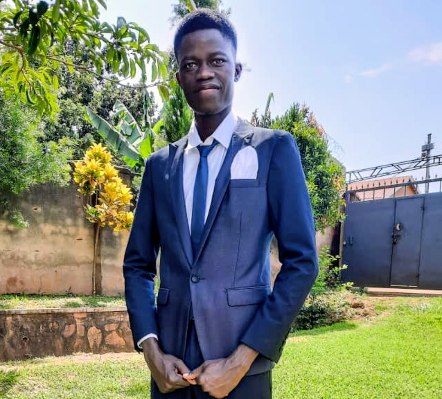
Patrick Olwenyi
Founder & Chief Executive Officer (CEO)
Provides strategic leadership, oversees the organization's vision, and guides the growth of Pace Media UG.
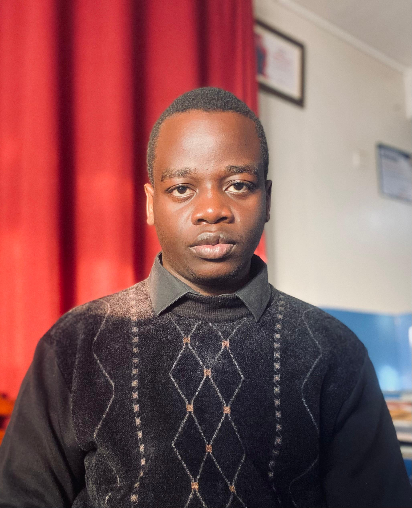
Mr. Mamolo Trevor
Managing Director (MD)
Oversees daily operations, implements organizational policies, and ensures all departments work efficiently.
Mr.Ssekitoleko Steven
Chief Accounting Officer
Manages budgeting, financial planning, payroll, reporting, and accountability of company resources.

Ms. Lakisa Patricia
Chief Legal Officer
Provides legal advice to the organization, ensures compliance with laws and regulations, drafts and reviews contracts, protects the company's legal interests, and oversees corporate governance.
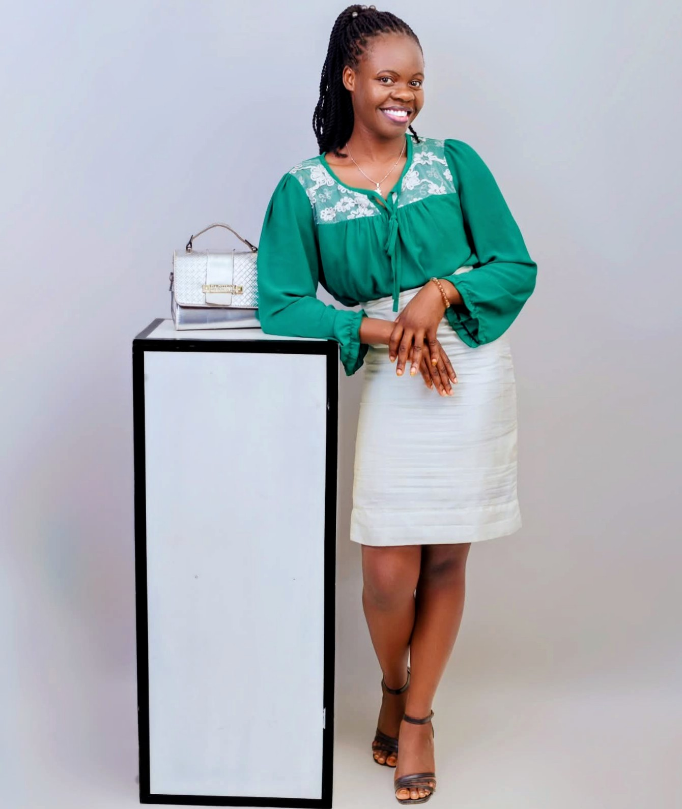
Ms.Nyapendi Immaculate
Chief Administrative Officer
Coordinates office administration, staff records, communication, and organizational support services.
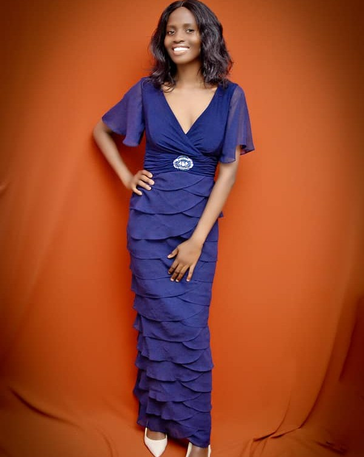
Ms.Nelima Sophie
Executive Producer
Leads television and digital productions while maintaining high production standards.
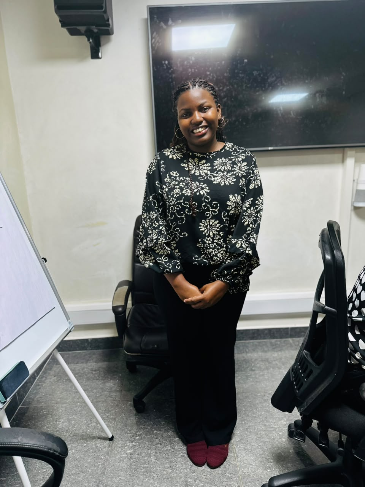
Ms. Atugonza Christine
Programming Manager
Plans and coordinates television schedules, special broadcasts, and entertainment programs.
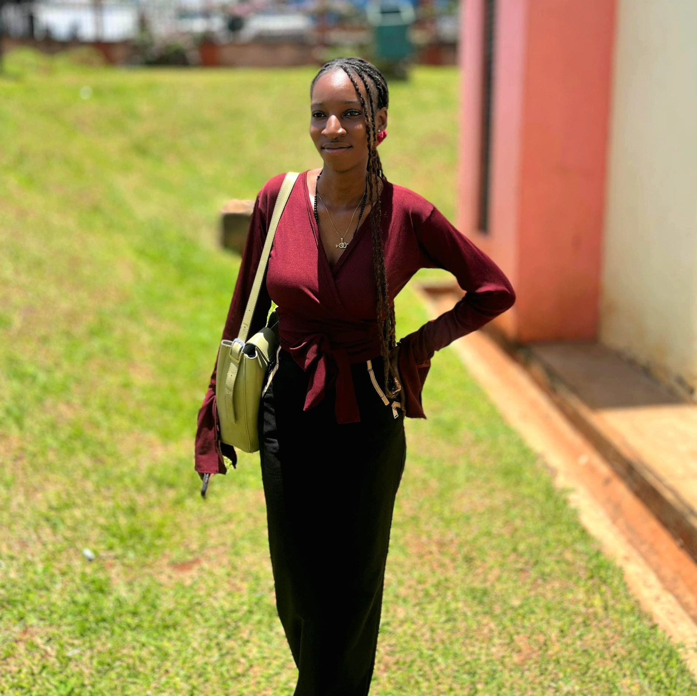
Natalie Kisha
Chief Editor
Reviews news content, ensures accuracy, and supervises the editorial team.
Host
Ms.Winnie Akwang
Covers breaking news, conducts interviews, and produces field reports.

Social Media Manager
Digital Media
Manages Facebook, X, TikTok, YouTube, and other digital platforms while engaging audiences.
Latest News

Museveni Announces Major Public Service Changes
By Patrick Olwenyi — November 13, 2026
President Yoweri Museveni has announced significant changes within Uganda's public service, including the retirement of 11 permanent secretaries. The changes form part of a wider restructuring of government institutions and senior public service leadership. The reshuffle has attracted attention, particularly regarding its implications for public administration, government efficiency and service delivery. Question: Will these changes improve accountability and service delivery in government institutions?
Read
Bank of Uganda Maintains Lending Rate at 12%
Patrick olwenyi — November 13, 2026
The Bank of Uganda has maintained its benchmark lending rate at 12%, despite growing concerns over rising inflation and economic uncertainty. The Central Bank says the decision is intended to allow previous monetary policy adjustments to take effect while monitoring developments in the economy. Uganda's inflation pressures, rising food and fuel prices, and fluctuations in the exchange rate remain key concerns. What does this mean for ordinary Ugandans? Borrowing costs may remain high, potentially affecting businesses, investors and individuals seeking loans.
Read
MPs Raise Alarm Over Impassable Roads
Patrick Olwenyi — November 13, 2026
Members of Parliament from the Lango sub-region have raised concerns over flooded and impassable roads, calling for urgent government intervention. The deteriorating road conditions are affecting transportation, movement of goods and access to essential services. The situation has renewed calls for improved road maintenance, drainage systems and investment in rural infrastructure. Residents are looking to government for lasting solutions rather than temporary repairs.
ReadUganda Begins Withdrawing Troops from Somalia
By Patrick Olwenyi — November 13, 2026
Uganda has begun a phased withdrawal of its troops from Somalia, marking a significant development in East Africa's regional security arrangements. Ugandan forces have played an important role in supporting Somalia's security operations and fighting the Al-Shabaab militant group. The withdrawal is expected to continue through 2027, with thousands of Ugandan troops eventually returning home. The development raises questions about the future of Somalia's security arrangements and the sustainability of its fight against insurgency.
Read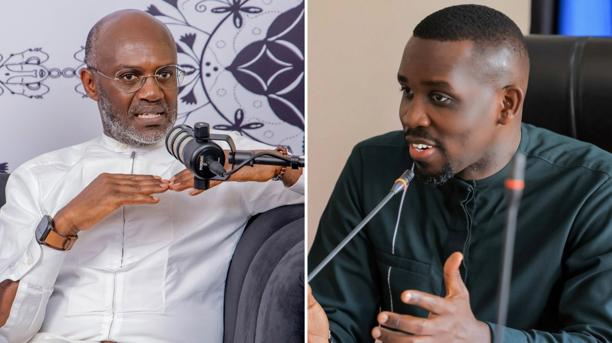
Opposition Party Sets Conditions for National Dialogue
By Patrick Olwenyi — November 13, 2026
Uganda's political debate over national dialogue continues to attract attention after the People's Front for Freedom (PFF) outlined conditions for participating in the proposed discussions. Among its demands are a neutral convener, an agenda jointly developed by government and opposition parties, inclusive representation and an independent mechanism to guarantee implementation of any agreements. The development raises fresh questions about the possibility of political reconciliation and consensus-building in Uganda. Can Uganda achieve meaningful national dialogue amid continuing political disagreements?
Read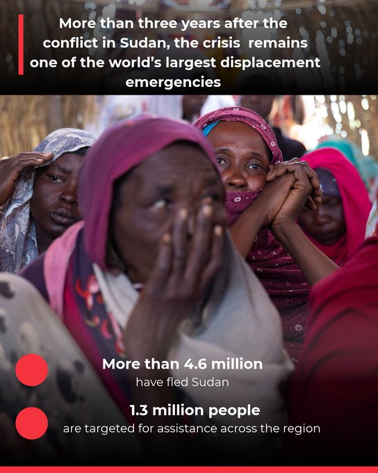
Humanitarian Crisis Deepens in the Region
By Patrick Olwenyi — November 13, 2026
Humanitarian concerns continue to grow across parts of East Africa as conflict and insecurity force thousands of people from their homes. In Ethiopia, escalating clashes have displaced tens of thousands of people, with many crossing into neighbouring Kenya in search of safety. Humanitarian organisations have raised concerns about food shortages, inadequate shelter, clean water and access to healthcare. The situation highlights the growing need for regional cooperation and urgent humanitarian assistance.
Read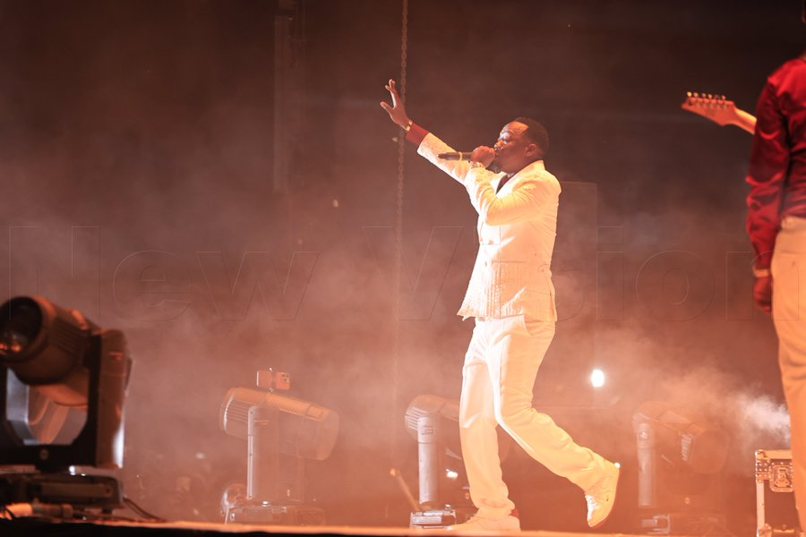
Sir Mesach Semakula’s 50 Years of Greatness Concert: Triumph Amidst Torrential Rain
By Bro Patrick — November 14, 2026
Popular and legendary artist Meshach Semakula headlines a sold-out show at Kingdom Kampala with surprise guest performers. On Friday, November 13, 2026, Ugandan band legend Sir Mesach Semakula marked his 50th birthday and over three decades in music with a landmark concert dubbed 50 Years of Greatness at Kingdom Kampala. While the show stood out as one of the biggest live music gatherings of the year, it was equally defined by behind-the-scenes drama, torrential weather, and technical setbacks that tested the veteran performer's resolve. Concert Success and Star-Studded Highlights Backed by corporate partners including I&M Bank Uganda and V&A Sherry, the event drew an overwhelming turnout that packed Kingdom Kampala to capacity. • Commercial Sell-Out: Tickets—priced at UGX 150,000 for ordinary entry, UGX 3 million for VIP tables, and UGX 5 million for premium VVIP tables—sold out, with over 340 VIP tables booked alongside thousands of general admission revelers. • Nostalgic Setlist: Taking the stage to deafening cheers, Semakula took fans on a musical journey spanning his 33-year career, performing timeless classics such as Tukwegomba Bangi, Sigwe Onsimila, Ntomedde, and Kulika Baby. • A-List Guest Appearances: The celebration doubled as a reunion of Ugandan music royalty. Heavyweights including Juliana Kanyomozi and Rema Namakula shared the stage for memorable vocal moments, alongside appearances from Jose Chameleone, Stecia Mayanja, and fellow band veterans. Challenges and Setbacks on the Night Despite the massive crowd and commercial success, staging the concert—into which Semakula reportedly invested roughly UGX 300 million—came with severe logistical and environmental hurdles: • Pre-Show Venue Dispute: Just hours before gates were scheduled to open, a last-minute standoff over venue clearance threatened to halt the event altogether before prominent businessman Godfrey Kirumira stepped in to broker a resolution. • Heavy Rain and Equipment Failure: A torrential afternoon downpour drenched the open-air setup at Kingdom Kampala, soaking VIP seating arrangements and damaging key sound equipment. Consequently, organizers were forced to abandon the planned full live-band instrumentation for segments of the night, relying instead on CD playback. • Ticketing and Entry Chaos: The combination of bad weather and a massive surge of attendees created bottlenecks at entry points, leaving some ticket holders stranded outside while opportunistic resellers exploited the confusion. Aftermath and Follow-Up Shows True to his humble reputation, Semakula addressed the technical and logistical glitches the following morning, issuing a heartfelt public apology to fans who braved the rain or struggled with entry, taking personal responsibility despite circumstances outside his control. Unfazed by the Kampala storm, Semakula immediately took the celebration on the road, following up the capital's show with a regional edition of 50 Years of Greatness at Maria Flo Hotel in Masaka on Sunday, November 15, 2026.
Read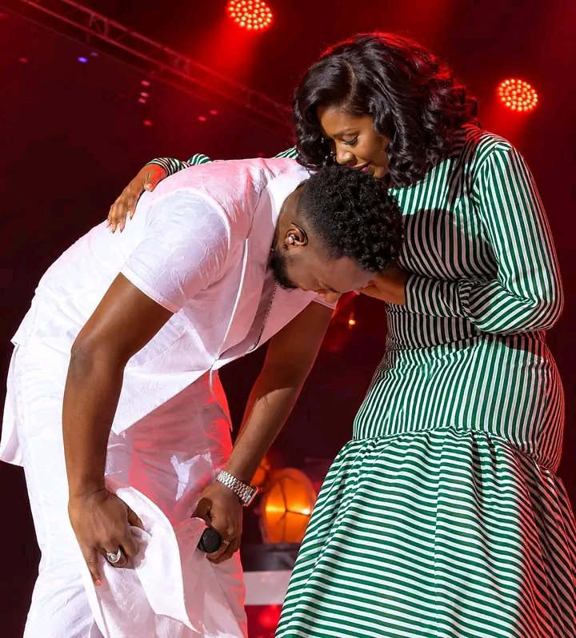
Levixone Lights Up Kampala Serena Hotel
By Bro Patrick Ug — November 12, 2026
Ugandan gospel sensation Levixone has delivered an exciting musical experience at Kampala Serena Hotel, bringing together gospel lovers for a night of worship, entertainment and celebration. The performance showcased the growing influence of Uganda's gospel music industry and its ability to attract audiences through high-quality productions. Levixone continues to strengthen his position among Uganda's leading gospel entertainers.
Read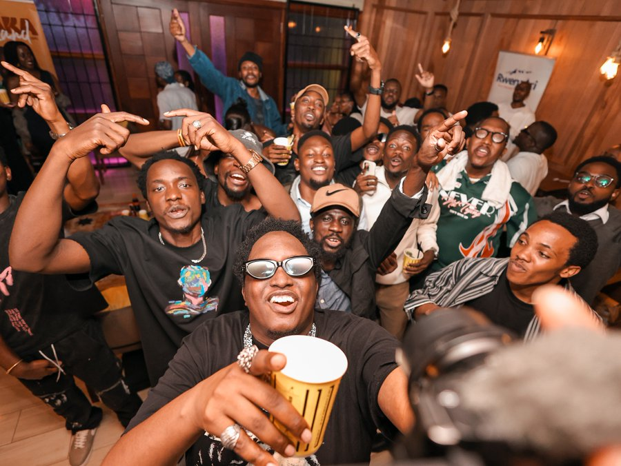
Joshua Baraka Lands Major International Brand Partnership
By Bo Patrick Ug — November 14, 2026
Ugandan singer Joshua Baraka has secured a major partnership with global payments company Visa, becoming its first-ever Ugandan brand ambassador. The partnership marks another milestone in the singer's growing international career as he prepares for the release of his upcoming EP, Recess 2, and his B'rakaland EA concert scheduled for November 28 at Lugogo Hockey Grounds. The development highlights the growing international recognition of Uganda's music industry.
Read15th HiPipo Music Awards Shine at Kampala Serena Hotel
By Bro Patrick Ug — November 14, 2026
On Friday, November 13, 2026, the 15th HiPipo Music Awards (HMA) took place at the Kampala Serena Hotel, bringing together musicians, digital creators, industry leaders, and fans to celebrate Ugandan and African musical excellence. Held alongside the 13th Digital Impact Awards Africa and the Digital & Financial Inclusion Summit, the milestone event carried the theme "We Vibe With The Best". (Note: While often confused in name with the dedicated Uganda Hip Hop Awards—whose 2026 nominations were recently unveiled ahead of its ceremony at Motiv Bugolobi—the HiPipo Music Awards is one of Uganda's longest-running multi-genre music ceremonies.) Event Highlights and Atmosphere The 2026 edition marked fifteen years of the awards platform, blending traditional red-carpet glamour with a modern focus on streaming, social media virality, and regional talent. • Massive Public Engagement: Ahead of the gala, public voting across 15 categories generated millions of engagements across Uganda, East Africa, and the diaspora, turning nominee campaigns into community-wide movements. • Star-Studded Lineup: The ceremony featured live performances and appearances from top regional and international acts, including Joshua Baraka (who swept four major accolades at the 2025 edition) and UK-based Ugandan duo The Ganda Boys. • Cultural and Government Backing: The event received endorsements from cultural institutions—including His Majesty the Kyabazinga of Busoga—as well as support from the Uganda National Musicians Federation (UNMF) and tourism stakeholders. Notable Categories and Early Winners The 15th edition spotlighted 15 core categories spanning regional sounds, breakthrough artists, gospel, viral hits, digital music creators, and continental heavyweights: • African Heritage Award: Honored Ugandan-born, UK-based musical duo The Ganda Boys for their decades-long work promoting African cultural heritage globally. • Best Regional Artiste: In one of the night's most competitive categories—featuring over 14 nominees from across Uganda—Badman Nelly G (representing Acholi) and Tina Baiby (representing Busoga) emerged victorious. • Modern Digital Categories: Reflecting the changing music landscape, the 2026 awards introduced categories such as Best New Media/Digital Creator in Music and Most Viral Song, alongside the return of the Best Diaspora Act. Major Winners by Category Joshua Baraka emerged as the biggest winner of the night, repeating his 2025 dominance by sweeping top national and regional accolades: • Artist of the Year: Joshua Baraka • East Africa Best Artist of the Year: Joshua Baraka • African Heritage Award: The Ganda Boys (honored for their decades-long work promoting African cultural heritage globally) • Best Regional Artiste: Badman Nelly G (Acholi) and Tina Baiby (Busoga), who prevailed in one of the night's most competitive categories featuring over 14 regional nominees • Best Regional Song of the Year: Badman Jelly G
Read
Kasuku and Zubedah Take Their Podcasts to Television
By Bro Patrick Ug — November 14, 2026
Uganda's podcast industry is taking another major step as MultiChoice Uganda brings popular digital talk shows hosted by Kasuku and Zubedah to television. The development signals the growing influence of digital content creators and the increasing convergence between social media entertainment and mainstream broadcasting. Could this be the beginning of a new era for Uganda's podcast industry?
Read
Uganda Cranes Held to a 1–1 Draw by Botswana
By Bro Patrick Ug — November 15, 2026
Cranes Held to Frustrating 1-1 Draw by Resilient Botswana in Hoima HOIMA, Uganda — Despite taking an early lead in front of a lively crowd at Hoima City Stadium, the Uganda Cranes settled for a 1-1 draw against Botswana's Zebras in Matchday 3 of the 2027 Africa Cup of Nations (AFCON) Qualifiers. While the point keeps Paul Put’s side unbeaten at the summit of Group H, the result left fans and technical staff rueing missed early opportunities ahead of the return leg in Gaborone. Fast Start Derailed by First-Half Set-Piece Uganda began the evening on the front foot, pressing Botswana deep into their own half during a dominant opening spell. That early intensity paid off in the 8th minute, when promising young forward James Bogere found the back of the net to hand the Cranes a 1-0 advantage. However, Uganda failed to capitalize on their momentum to put the game out of reach during the opening 20 minutes. Gradually, Botswana grew into the contest, exploiting gaps in the Ugandan midfield. The visitors' persistence was rewarded in the 31st minute when Losika Ratshukudu volleyed home the equalizer following a well-worked free-kick routine, silencing the home faithful. Goalkeeping Drama and Second-Half Stalemate Adding to Uganda’s first-half disruption was an unexpected goalkeeping change shortly before the interval. Veteran captain Denis Onyango was forced off in the 42nd minute, prompting coach Paul Put to introduce Kelvin Osayi between the posts. Osayi rose to the occasion, making three crucial saves to ensure Botswana did not steal a shock lead. In the second half, Put turned to his bench—introducing Travis Mutyaba, Denis Omedi, and Fahad Ssebufu—in search of a winning spark. Despite enjoying 55% of overall possession and strong defensive displays from standout performer Rogers Torach and Kenneth Ssemakula, the Cranes struggled to break down a disciplined Botswana backline that racked up 25 clearances. Post-Match Reaction and Group H Outlook Speaking after the final whistle, head coach Paul Put lamented his team's inability to kill off the game early while praising goalscorer James Bogere's work ethic. Put also pointed to midfield struggles and a lack of regular club playing time among several squad members as key factors behind the sluggish second-half display. The result extends Uganda's unbeaten run in Group H to three matches (one win, two draws), keeping them top of the table on 5 points, one ahead of second-placed Libya (4 points), while Botswana sits third on 3 points and Tunisia fourth on 1 point. Although Uganda has already qualified automatically for the 2027 finals as co-hosts alongside Kenya and Tanzania, Put views the campaign as vital preparation for the continental showpiece. The two sides have little time to dwell on the stalemate, as the Cranes immediately travel south to face Botswana in the return leg in Gaborone on Tuesday, November 17, 2026.
ReadFeatured Shows
The X Files Podcast
Engaging discussions on issues affecting Africa and the world.
Pace Updates
Breaking news, interviews and current affairs.
Faith
Live worship, praise and transformational moments.
Latest Videos
Live Now
Watch our latest live broadcast and community updates in real time.